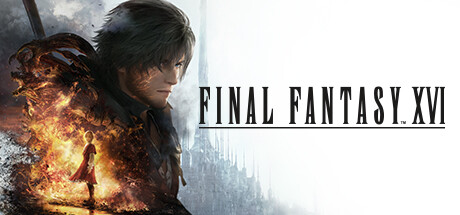

All Games > RPG Games > FINAL FANTASY Franchise > FINAL FANTASY XVI
FINAl FANTASY XVI

- Title: FINAL FANTASY XVI
- Description: An epic dark fantasy where fates are decided by mighty Eikons and the Dominants who
wield
them. This is the tale of Clive Rosfield, a tragic warrior who swears revenge on the Dark Eikon
Ifrit, a
mysterious entity that leaves naught but calamity in its wake.
- Release: 2024.09.17
- Review: 4.5/5(★★★★☆)
- Developer: Square Enix
- Publisher: Square Enix
Add to Cart
© 2025 Valve Corporation. All rights reserved. All trademarks are property of their respective owners in the US
and other countries.
VAT included in all prices where applicable.
Privacy Policy | Legal | Steam Subscriber Agreement | Refunds | Cookies